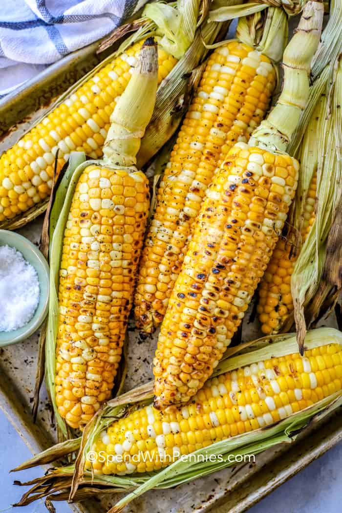

Grilled Corn on the cob

Grilled Corn on the Cob is definitely something to get fired up about.
A traditional grilled corn recipe is served slathered with butter and sprinkled with salt. It goes perfect next to grilled classic hamburgers, steak, grilled chicken or BBQ chicken. The pure taste of summer!
Ingredients
Marinade
- 4 ears of corn
- 1 tablespoon olive oil if direct grilling
- 2 tablespoons butter
- salt & pepper to taste
Directions - Grill Corn in Husk
- Peel back the husks of the corn without detaching them from the bottom of the cob. Remove silk and fold husks back into place to cover the corn
- Place corn in a sink or large bowl of water to soak for at least 15 minutes (it can soak overnight if needed).
- Preheat grill to medium-high heat.
- Remove corn from the water and shake off excess so it's not dripping. Place cobs on the grill and cook 15-20 minutes, turning occasionally.
- Once corn is cooked to your liking remove from the grill, peel off husks and serve with butter, salt & pepper.